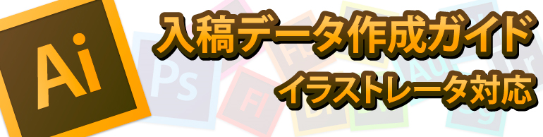

ラバーストラップの入稿データ作成方法。イラストレータ編、PS/CLIP STUDIO編。 (2025年春版)
2025年1月29日
初めてのラバストデータ（もどき）作成 by CLIP STUDIO & フォトショップ
ラバストの入稿データの作成にはアドビイラストレーターが必要ですが、なかなかハードルが高いですよね。ここでは、CLIP STUDIOやフォトショップを使用し、自分でラバストデータの第一歩を作成するコツを紹介しています。

イラストレータ編

データ入稿方法
初めてラバーストラップを製作される方は、立体加工をお読み下さい。ラバーストラップのスリットや階層構造に関して、説明しています。
製作物のデザインを作成してください。アドビイラストレータを使用し、実寸で作成後、アウトライン化してください。イラストレータは、最新バージョンまで対応しています。
デザインデータを、メールの添付ファイルにて、contact@hotmobily.jpまでお送り下さい。
弊社にて、デザインの校正を行い、最終的にお客様にデザインを確定して頂きます。
最も理想的な入稿形式はイラストレータデータでございますが、それ以外のjpgeやpdfでのご入稿も可能です。
ラバー製品のデータ作成を解説

ご入稿時の主な注意点
■色のご指定は、「PANTONE Solid coated/PANTONE Solid uncoated」「DIC COLOR GUIDE」にてご指定下さい。
■デザインは実寸サイズ（100％サイズ）で作成してください。
■デザインは全てパス（ベクターデータ）で作成してください。
■グラデーションは表現できませんので「単色ベタ塗り」でお願いします。
■フォントの置き換え防止のため数字、文字は全て「アウトライン化」をお願いします。
■画像を貼り付けたデータでは製作はできません。トレース等で全てのパーツを必ずパス化（ベクター化）して下さい。
■デザインは実寸サイズ（100％サイズ）で作成してください。
■デザインは全てパス（ベクターデータ）で作成してください。
■グラデーションは表現できませんので「単色ベタ塗り」でお願いします。
■フォントの置き換え防止のため数字、文字は全て「アウトライン化」をお願いします。
■画像を貼り付けたデータでは製作はできません。トレース等で全てのパーツを必ずパス化（ベクター化）して下さい。
◆データ制作の流れ
| テンプレートをダウンロードする ・ラバーストラップ ・ラバーキーホルダー ・ラバーコースター |

|
◆製作予定の画像を配置する
| テンプレート内「お客様作業用テンプレート」にございます、『表』の範囲に画像を配置します。 ※必ず仕上り実寸で配置してください。 ※裏面はシルク印刷がある場合のみご利用ください。また、ご利用時は製品デザインを反転させてからシルク印刷デザインを配置下さい。 |

|

◆パーツごとにトレースしベクター化する
| 「髪の毛」や「目」、「服」など、仕上り後色分けしたいパーツを別々に、全てトレースし、パスデータ化（ベクター化）します。 ※グラデーションは使用できませんので、必ず「単色ベタ塗り」でパス（ベクター）を作成してください。 ※パスは交差せず、一筆書きの閉じた状態で作成してください。 トレースとは |

|

◆アタッチメント取り付け穴を設置する
| テンプレート内の「アタッチメント取り付け穴を、「ベース部分」のパスに設置し、複合化（合体）します。 アタッチメント取り付け穴は製品の側面であればどこにでも配置出来ますが、デザインによっては強度の観点からご提案出来ない場合もございます。 |

|
◆色指定をする
| 色のご指定は、「PANTONE Solid coated/PANTONE Solid uncoated」「DIC COLOR GUIDE」にてご指定下さい。 ※こちらのご指定が困難な場合、空欄でも構いません。ご注文後、別途色味のご指定方法を連絡させて頂きます。 |

|

トレース対象のデザインについて
イラストレータデータ以外でのデザインのご入稿の場合、トレース作業が必要になります。 通常トレース作業はご注文後の調整となりますが、法人様に限り、ご注文前にトレース作業を承ります。 トレース作業後、正式にご注文に至らなかった場合、トレース作業代金として1デザインにつき8,000円（課税前）を頂戴致します。 尚、ご注文前に弊社より提出するトレース作業後のデザインはJPGとなります。※ご注文確定後は正式にPDFを提出させて頂けます。